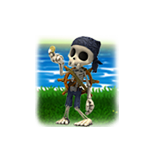
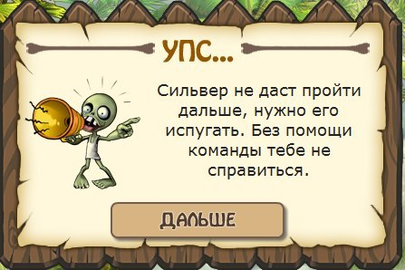
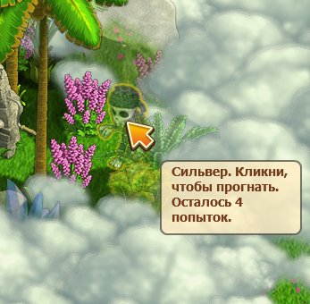

Получено: файл; исходный URL. Изображение получено с зеркала без перекодирования; совпадение с исходным хостом не проверено. Скриншот показывает частный игровой момент, а не начальную раскладку или универсальный параметр. Страница: источник.


Сильвер — пират
Историческая браузерная версия; сеть и редакция требуют сверки- Тип
- Неигровой персонаж
- Версия и дата
- Историческая браузерная версия; сеть и редакция требуют сверки
Дополнительные изображения






Данные по источнику · браузерная игра; соцсеть не указана · 13.12.2013 — дата в адресе; поздняя редакция не исключена
Предварительно: Исторический фанатский источник; скриншоты и текст могут относиться к различным редакциям.. Требуется сверка.
- Описание
- Статья сообщает о Сильвере и необходимости команды; ценность Флаг можно получить при клике, Саблю Сильвера — после изгнания. В трюме и сундуке описан раздел «Остальное» для дублонов и элементов коллекций.
- Скриншоты
- На одном кадре подсказка говорит, что без команды не справиться; на другом отображено «Осталось 4 попыток». Дата отдельных снимков и условия съёмки неизвестны; число не следует считать универсальным числом игроков или дублонов.
- Дублоны
- В статье не указано количество обычных дублонов за изгнание одного Сильвера.
Данные по источнику · браузерная игра; редакция не уточнена · исторические публикации и текущая версия вики
Предварительно: Возможное копирование между справочниками и зависимость их показаний не проверены; вопрос не разрешён.. Требуется сверка.
- Разногласие
- Zombie-island и FatalGame утверждают, что Сильвер мешает добраться до Сундука Мертвеца; Зомбипедия прямо исключает главный Сундук Мертвеца из числа перекрываемых сокровищ. Причина разногласия не установлена: ошибки, версии или изменения механики возможны.
- Обычные дублоны
- Вики упоминает несколько дублонов за найденные вещи Сильвера, например Треуголку, но это не количество дублонов за изгнание одного Сильвера.
Связанные сущности
- Остров Сокровищ — место встречи по источнику
- Жуткий остров — место встречи по источнику
- Таинственный остров — место встречи по источнику